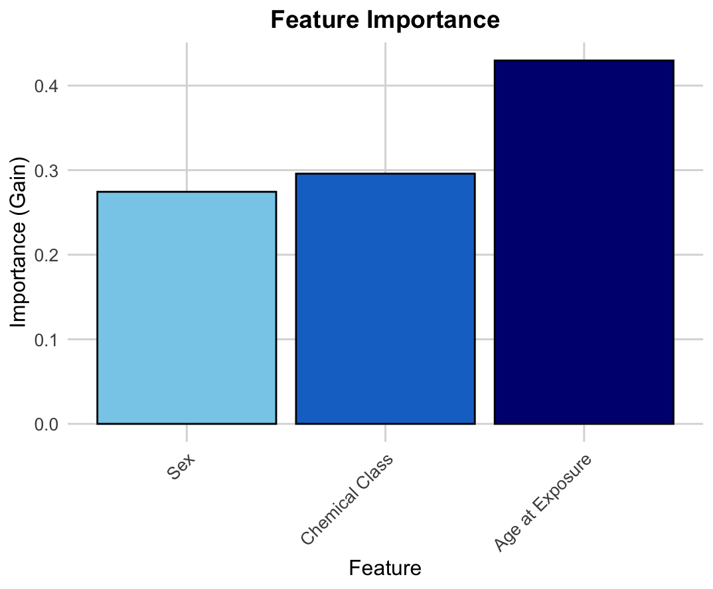
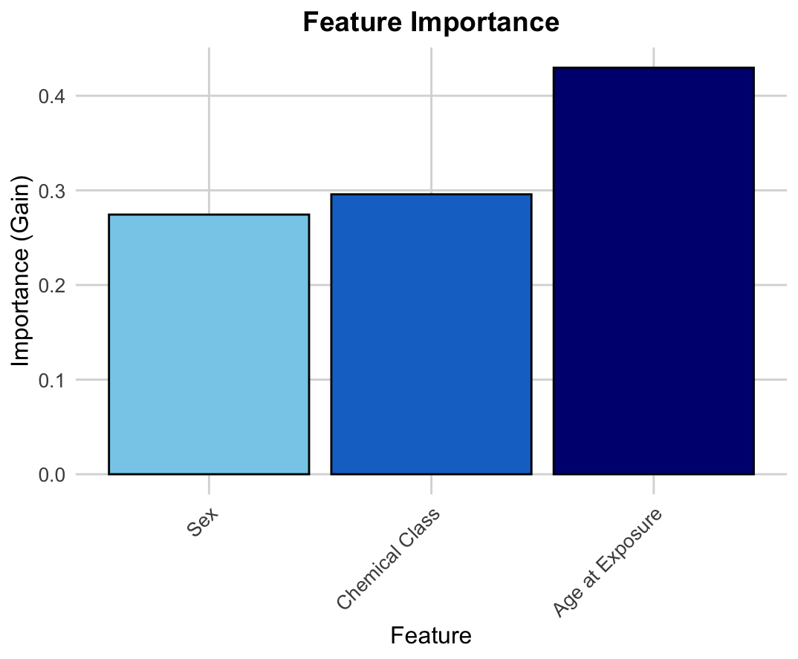

I am a researcher in bioengineering and computational biology, specializing in machine learning applications for biological systems. My research focuses on the **accumulation of microplastics in human biological systems**, analyzing their toxicological and physiological effects using advanced AI models.
I have investigated the **impact of microplastics on different organ systems**, identifying key patterns in their presence across tissues. My work integrates **environmental health insights with computational modeling**, aiming to inform regulatory policies on microplastic exposure.

 
